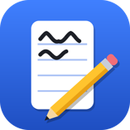

Not Tutabilirim
Android ve iOS için not uygulaması
Not Tutabilirim; el yazısı notları, PDF üzerine not alma, ses kaydı, el yazısı tanıma ve klavyeyle hızlı yazı notları (yapılacaklar listeleri, hatırlatıcılar, etiketler) sunan bir not uygulamasıdır.
Notlarınız cihazınızda saklanır. İsterseniz kendi Google Drive hesabınızla cihazlarınız arasında senkronlayabilirsiniz; bu durumda notlar Drive'ınızda yalnızca uygulamanın erişebildiği gizli bir klasörde durur.
Not Tutabilirim is a note-taking app with handwriting, PDF annotation, audio recording, handwriting recognition and quick typed notes (checklists, reminders, labels). Notes are stored on your device and can optionally be synced through a hidden app folder in your own Google Drive.
İletişim / Contact: terraforge.mobile@gmail.com